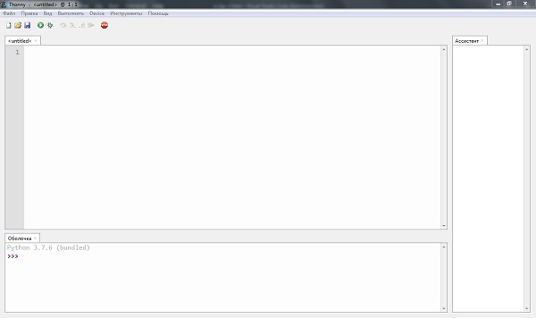
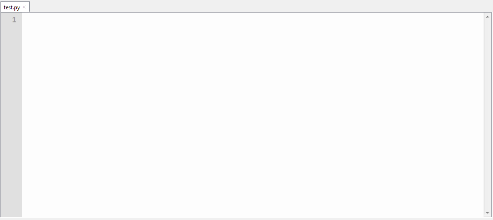
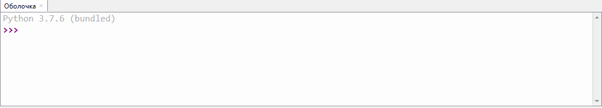
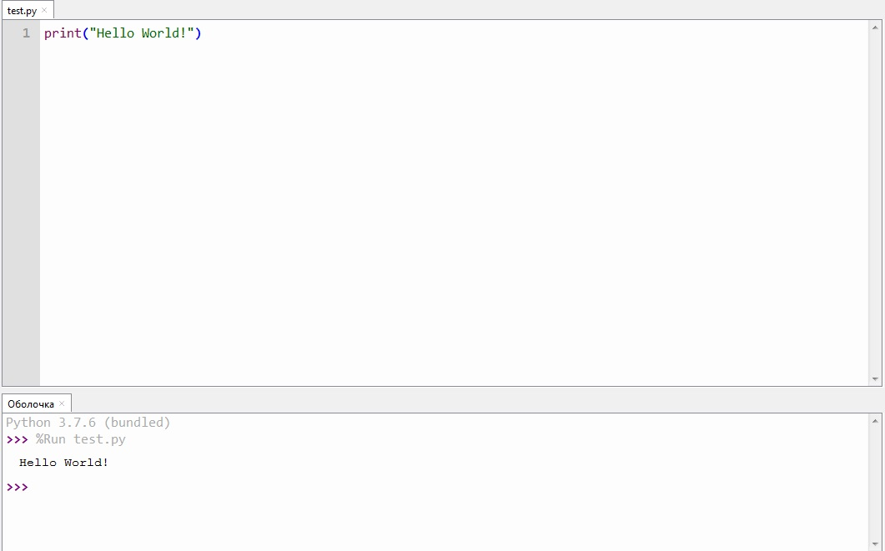

Перед тем как обсуждать сам Python, я сделаю небольшое отступление. Во-первых я
хочу заметить, что многие языки программирование очень похожи по своим функциям и
синтаксису. Так что если вы уже изучали другие языки программирования, то это вам
сильно пригодится при изучении Python. В первую очередь Python - это ООП язык
программирования, то есть состоит в виде объектов с разным классом.
Если вы совсем не изучали языки программирования и Python является для вас
первым, то замечу, что для изучения любого языка программирования требуется
терпение и труд, также значительно облегчил бы задачу логический склад ума. Для
большего понимания работы программ попробую объяснить суть на пальцах. Представим
себе компьютер с кучей микросхем и разными системами и вот он может выполнить
какие-то действия, он устроен так, что понимает какие-то базовые команды, но для
одного конкретного действия их нужно много. Например команда изменить цвет пикселя
на такой-то координате экрана. И ведь ещё нужно сделать возможность ввода команды.
Но если мы захотим сделать прямоугольник синего цвета на экране, у нас уйдёт пара
часов с возможностью копировать и вставлять, чтобы этого добиться, причём конечно
же такой возможности изначально не было. Использовать этот начальный язык
программирования мягко говоря не практично. Тогда начали создавать своего рода
переводчики. Вы пишите команду на заранее известном вам языке, а специальный
переводчик просматривает вашу программу и переводит компьютеру в понятный ему язык.
И все в итоге довольны. Таким образом за любой написанной вами компьютеру
программой скрывается куча других команд. Также замечу, что все серьёзные языки
программирования на английском.
Зачем изучать Python
В первую очередь многие изучают Python для того, чтобы стать хорошим специалистом
и найти себе работу. Последние данные показывают заметное возрастание популярности
Python. С этим связано сразу несколько факторов. В первую очередь Python довольно
прост в изучении, у него приятный синтаксис. Также Python имеет множество библиотек
(если вы никогда не сталкивались с данным понятием в программировании, то дождитесь
других моих статей, где я их упомяну или разберитесь сами), что конечно же сильно
облегчает жизнь программистам. Сам язык очень многофункционален, в большинсте своём
как раз из-за библиотек. С его помощью можно создавать игры, нейронные сети(не
очень простое понятие, возможно позже разберу их поподробнее), алгоритмы,
приложения, использовать как backend к сайтам и т.д. Многие крупные компании
используют его.
Если вы хотите учиться python, рекомендую идти на уже готовые курсы, например
питонтутор, это бесплатный браузерный курс с хорошей программой.
Или вы можете учиться по моему блогу, но его жизнь только начинается и это
первая статья на данную тему, а одного входного урока не достаточно для
овладения языком.
Базовое задание. Урок 1.
Инструменты(IDE) для работы с Python
Вы можете спросить, что же такое инструменты для разработки или IDE. На самом деле
это приложения, которые понимают язык программирования и переводят его в понятный
компьютеру, часто они имеют кучу дополнительных функций, чтобы облегчить жизнь
программиста. Причём таких инструментов довольно много. Некоторые поддерживают
программирование сразу на нескольких языках, но нам сейчас нужен именно Python.
Нужно поставить себе одну из таких IDE.
Все эти IDE прекрасно показывают себя при работе с Python. Разберу их отдельно.
Я не считаю PyCharm лучшим вариантом т.к. он профессиальный IDE, для новичков
больше подойдёт Thoony, он очень прост интерфейсом. PyCharm и Thonny являются узко
направленными IDE. То есть работают только с Python. Visual Studio Code довольно
приятная IDE, но только в том случае, если вы её нормально настроите, лучше всего
она вам подойдёт если вы не собираетесь останавливаться на Python, ведь VSC
поддерживает кучу языков программирования. И наконец Repl.it. Это прекрасный сайт,
он поддерживает множество языков программирования, но у него есть одна проблема.
Repl.it - это сайт и работает только при подключении к интернету. Остальные же IDE
работают и без подключения к интернету. Repl.it также способен сохранять ваши
проекты по программированию, сам он не требует практически никакой настройки.
Задание
Теперь, когда мы настроили IDE и готовы работать, пора заняться изучением самого
языка. Для Python я чаще пользуюсь Thonny, хотя у меня и стоит VSC, так что
показывать буду на примере Thonny. В первую очередь после установки и запуска IDE,
давайте внимательно пройдёмся по окну IDE.
Вы должны увидеть это:

первым делом нажмите раздел "Файл" или "File"(если у вас в настройках стоит
английский). Затем выберите "Сохранить как" или "Save as". Дальше у вас откроется
окно сохранения. Вы должны выбрать место, где будет храниться ваша программа.
Лучше всего сделать себе отдельную папку в Документах. Вы можете назвать файл как
угодно, лично я назову test. Полностью он будет называться test.py, приставка py
указывает, что это программа Python.
Вот это окно используется для ввода кода:

А вот это окно консоль:

В консоли будут отображаться некоторые действия вашей программы. Теперь время
написать свою первую программу. Во многих языках программирования считается
необходимым писать "приветственную" программу, которая выведет в консоль
"Hello World!". Во многих языках эта программа выполняется по разному.
В Python для этого нужно использовать команду print(). В скобочках указываются
аргументы функции. Их несколько, но обязательно используется только один.
напишите print("Hello World!") и нажмите кнопку запуска(белая
стрелочка в зелёном кружочке). В консоли должно вывестись Hello World!

На этом всё! Ждите и других публикаций на похожие темы!